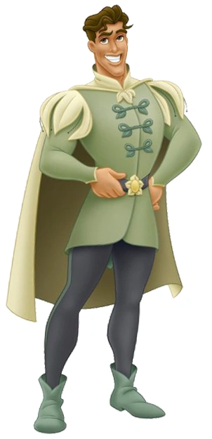
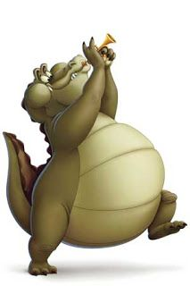

A Princesa e o Sapo (2009) é um dos filmes mais marcantes da Disney, famoso por apresentar Tiana, a primeira protagonista negra da franquia Disney Princesas. A história se passa na Nova Orleans dos anos 1920 e traz uma reviravolta criativa ao conto clássico dos Irmãos Grimm: em vez de quebrar o feitiço, a jovem também se transforma em sapo ao beijar o Príncipe Naveen
Personagens principais

Naveen

Louis
Melhores momentos
O sonho com o restaurante do pai